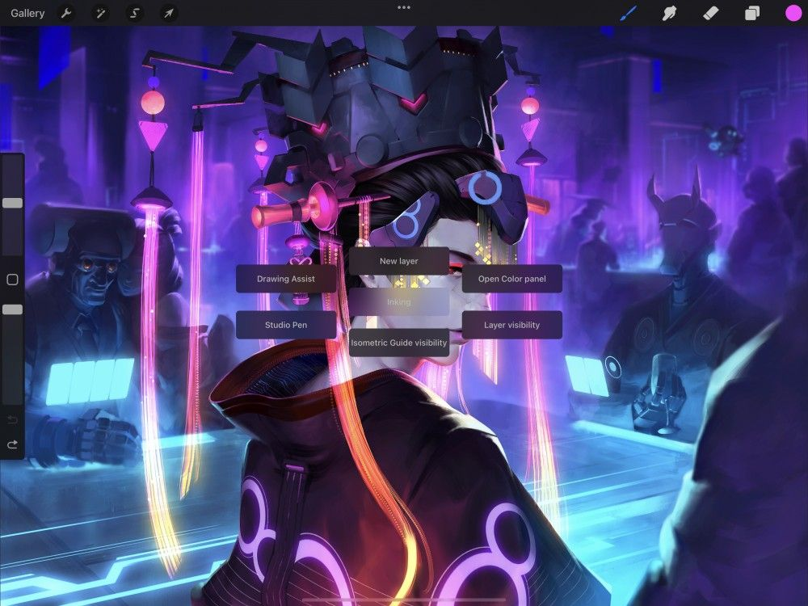
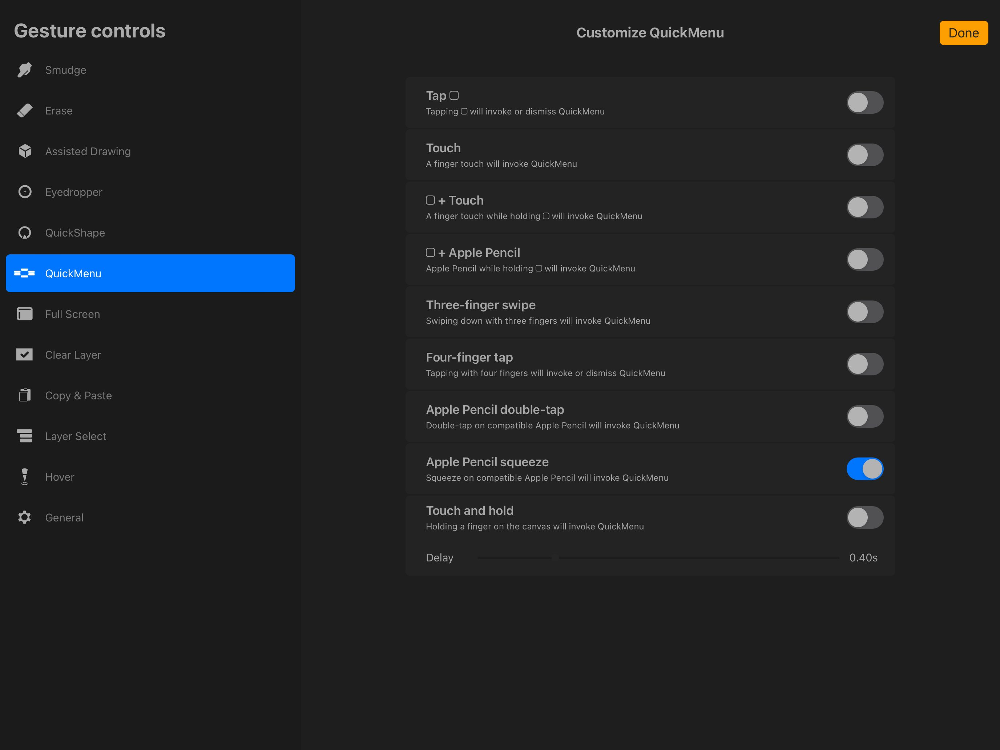
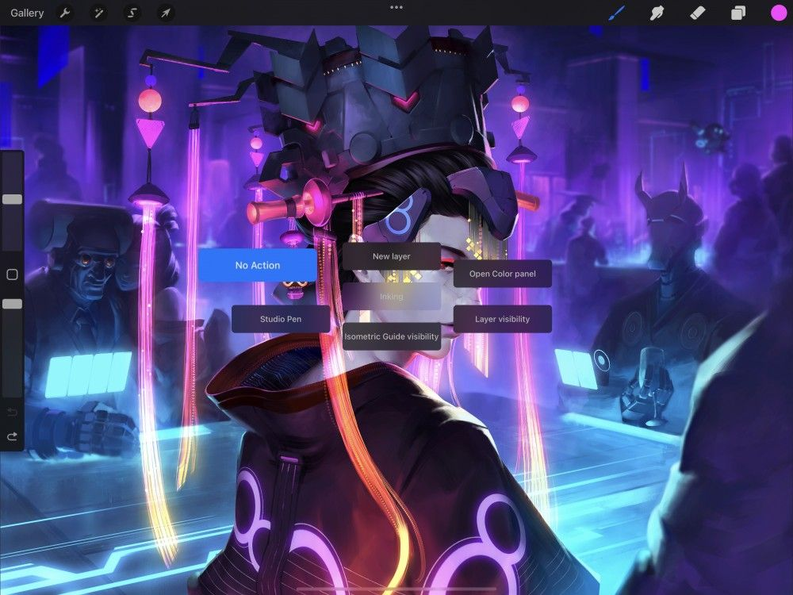
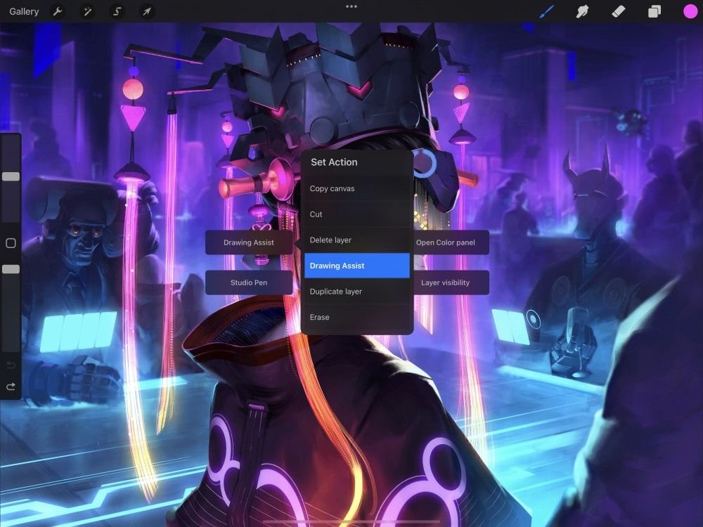
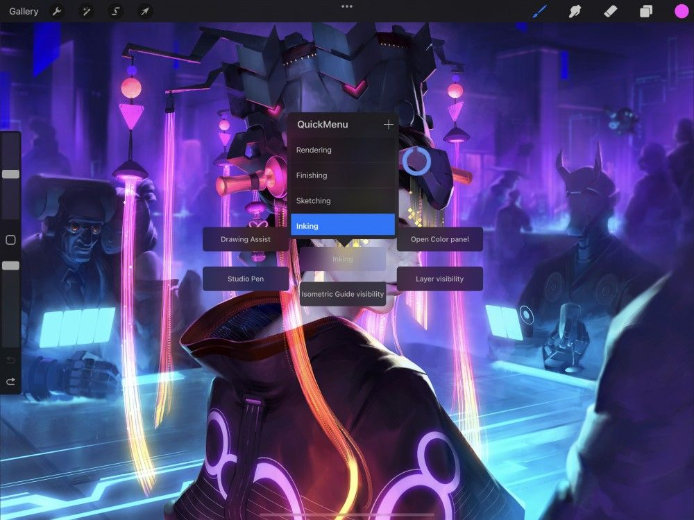

📖 Nội dung bên dưới là bản gốc tiếng Anh (chưa dịch). Ảnh đã cache offline.
QuickMenu
Enable, invoke, and customize QuickMenu for one-touch flexibility and convenience.
QuickMenu offers you a fully customizable radial menu so you can work your way, fast.

Every part of QuickMenu is customizable, from the six radial buttons to the shortcut you use to invoke it.
Pro Tip
If you use Apple Pencil to paint and have no need for painting with a finger, assign a one-finger tap or squeeze (Apple Pencil Pro required) as the shortcut to invoke QuickMenu. Calling up all your most-used tools with one quick and memorable gesture will speed up your workflow over time.

Enable QuickMenu
Assign a custom shortcut to activate QuickMenu.
Tap Actions > Prefs > Gesture controls > QuickMenu, and toggle any shortcut to activate QuickMenu.
If you use Apple Pencil to paint, we recommend using Touch or squeeze (Apple Pencil Pro required) to trigger QuickMenu.
Discover other ways to trigger QuickMenu in Gesture Controls .


Use QuickMenu
Tap to call up QuickMenu, or touch-drag to pick the function you need at lightning speed.
If you invoke QuickMenu with Touch, a one-finger tap will open the radial menu. It will remain open until you tap a button to select that option.
For a faster result using Touch, try a touch-drag gesture: when you tap, leave your finger held down, drag in the direction of your desired button, and release to select it.
Once you grow familiar with the location of each button in your radial QuickMenu, you can perform this touch-drag movement so quickly it becomes a simple muscle-memory flick in the right direction to trigger the option you need.


Customize QuickMenu
Set the six QuickMenu buttons to put your favorite tools at your fingertips.
By default, QuickMenu offers the following options:
New Layer
Flip Horizontally
Copy
Merge Down
Clear Layer
Flip Vertically
You can change any of these buttons to the Procreate functions you need the most. Invoke QuickMenu, and press-and-hold the button you want to change. After a moment, the Set Action menu will pop up. Scroll through the following list of options and tap the one you want.
2D Guide Visibility – turns 2D guides on or off
Actual Size – shows your artwork onscreen at actual pixel size
Add Text – invokes a text box and the Apple keyboard
Adjustments – assigns an adjustment of your choice to QuickMenu
Alpha Lock – alpha locks your current active layer
Animation Assist – opens and closes the animation assist interface
Clear Layer – clears your current active layer
Clipboard – invokes the Copy & Paste menu
Clone – opens the clone interface
Copy – copies any content on the current selected layer to clipboard
Copy Canvas – copies the entire canvas to clipboard
Cut – cuts any content on the current selected layer to clipboard
Delete Layer – deletes your current active layer
Drawing Assist – turns drawing assist on or off
Duplicate Layer – duplicates your current active layer
Dynamic Brush Scaling – turns dynamic brush scaling on or off
Erase – activates the erase tool
Eyedropper – activates the eyedropper tool
Fill Layer – fills your current active layer with your current active color
Fit to screen – fits your entire canvas to the screen
Flip Horizontally – flips your canvas horizontally
Flip Vertically – flips your canvas vertically
Full screen – turns full screen mode on and off
Isometric Guide Visibility – turns isometric guides on or off
Layer Select – selects the top layer of any content sitting directly under the center of QuickMenu
Layer Opacity – activates layer opacity
Liquify – opens the liquify interface
Layer visibility – turns the visibility of your currently selected layer on or off
Merge Down – merges your current active layer with the layer below
New Layer – creates a new layer
Next Frame – moves to the next frame when in Animation Assist, or adds a frame when on the last frame of the timeline
No Action – creates an empty button in the radial dial
Onion Skin – turns onion skins on or off only when in Animation Assist
Open Adjustments – opens the adjustments menu
Open Color Panel – opens the color panel
Open Layers Panel – opens the layers panel
Page Assist – activates and deactivates Page Assist
Paint – activates the paint tool
Paste – pastes whatever is currently in your clipboard into a new layer
Perspective Guide Visibility – turns perspective guides on or off
Previous Brush – reverts back to the previous brush you used
Previous Color – reverts to you most recently used previous color
Previous Frame – moves to the previous frame only when in Animation Assist
Project Canvas – turns project canvas on or off if your iPad is connected to a second display
QuickShape - turns QuickShape on or off
QuickShape stroke - turns on edit QuickShape for your last stroke
Recolor – activates recolor
Redo – redoes your previous action
Reference – invokes the reference companion
Select Brush – assigns a brush of your choice from the Brush Library
Select Layer Contents – selects all contents contained on your active layer
Selection Tool – activates the selection tool and panel
Single touch move – activates single touch move
Single touch zoom – activates single touch zoom
Smudge – activates the smudge tool
Solo Visibility – activates solo visibility to view the contents of a single layer in isolation
Symmetry guide Visibility – turns symmetry guide visibility on or off
Transform tool – activates the transform tool and panel
Undo – undoes your previous action
Procreate will remember your custom button settings.
QuickMenu Profiles
Set an unlimited number of custom QuickMenu Profiles for easy access to extra QuickMenu layouts.
Find having access to only six QuickMenu buttons limiting? Assign a different set of buttons to an alternative QuickMenu Profile. You can create as many alternative QuickMenu Profile as you like.
This is helpful if you use different sets of actions for different processes while you work. For example, you may want a different set of QuickMenu actions for sketching compared to when coloring a sketch. In cases like this, set up a QuickMenu Profile for sketching and a different profile for coloring.
To create a new QuickMenu Profile, invoke QuickMenu and tap the central QuickMenu Button titled ‘QuickMenu 1’. This will bring up the QuickMenu Profile menu.
Tap the + button in the top right of the menu to add a new QuickMenu Profile with No Action assigned to the six buttons. Tap and Hold each button to assign the actions you want to the new QuickMenu Profile.
Double-tap a QuickMenu Profile’s title to re-name it with a customized title.
To swap between QuickMenu Profiles, invoke QuickMenu and Tap the central QuickMenu Button. This will invoke the QuickMenu menu, Tap any of your QuickMenu Profile in the window to select it.

Still have questions?
If you didn't find what you're looking for, explore our video resources on YouTube or contact us directly. We’re always happy to help.